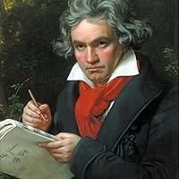

ლუდვიგ ვან ბეთჰოვენი დაიბადა 1770 წელს, ბონის ქალაქში. მისი მუსიკალური განათლება ადრეულ ასაკში დაიწყო. ის სწავლობდა მამამისთან, შემდეგ ვენის კონსერვატორიაში. პირველმა დიდმა მასწავლებელმა იყო ქრისტოფ ვილიბალდი დიმიტრი, რომელიც გიჟდებოდა ბეთჰოვენის უნარებში.
ბეთჰოვენმა შეცვალა მუსიკის ტრადიციული ფორმები და გააფართოვა მათი დიაპაზონი. მისი კომპოზიციები ხშირად ემოციური, ეპიკური და გამოთქმული იყო მისი შინაგანი შეშფოთებით. ბეთჰოვენის მუსიკამ გააკეთა მნიშვნელოვანი გარდამავალი ნაბიჯი კლასიკური და რომანტიკული მუსიკის შორის.
ბეთჰოვენის გავლენა იგრძნობა მომდევნო საუკუნეების მუსიკაზე და მისი როლი რომანტიზმში შესამჩნევია.